July 13, 2018
Reiley Phillips and Roman Preistley present their MS research at the 108st Annual Meeting of the Florida Entomological Society ( St. Augustine, Florida).
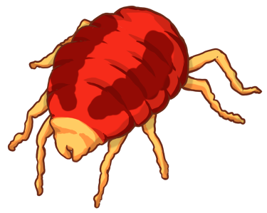
We develop research synthesis tools and
study the ecology and evolution of parasites and herbivores.
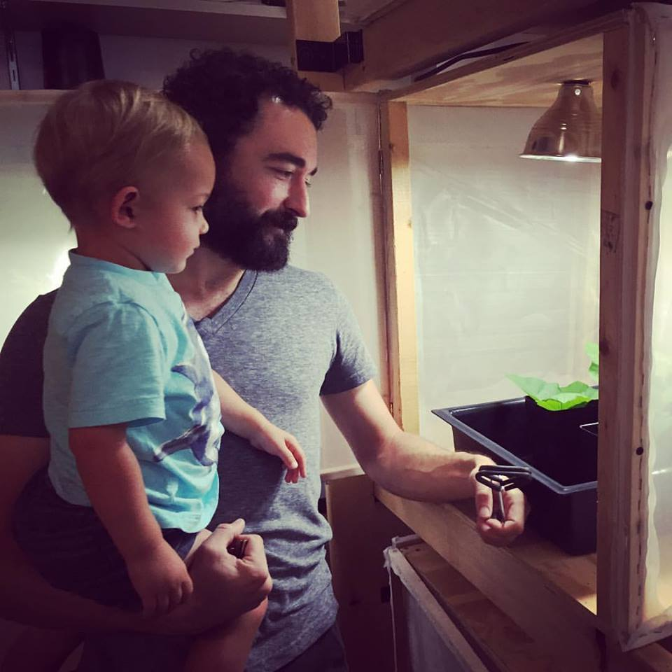
We are located in the Department of Integrative Biology at the University of South Florida, Tampa FL (USA).
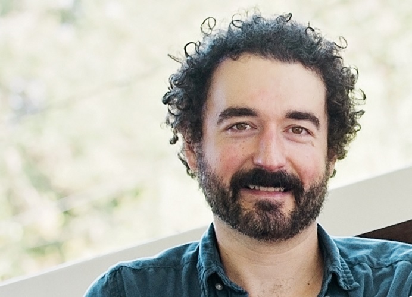
PDF, NESCent, Duke University
Ph.D., Ecology, Cornell University (2009)
M.Sc., Biology, Carleton University
B.Sc. (Hons.), Biology, Carleton University
Department of Integrative Biology
University of South Florida
4202 East Fowler Ave
Tampa, FL 33620
Marc's Office: SCA 306
Phone: (813) 974-6234
We are always looking for new Ph.D. or M.S. students, as well as undergraduates looking for Honors projects or research experience.
Send me an email and we'll chat about opportunities here at USF ( EMAIL ).
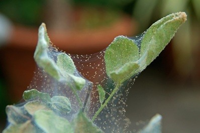
meta-analysis; TBA
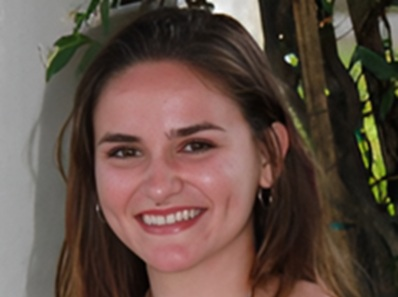
intraspecific predation; earwigs
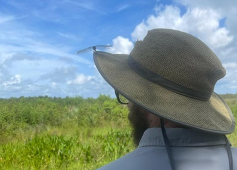
hemipterans; fungus biocontrol
ticks; fire-effects
scoping reviews; inflamation
parasitism; wild dogs
meta-analysis; plant-herbivore interactions
experimental evolution of spider mites; cross-host genetic-correlations; effects of wildflower-strips on crops
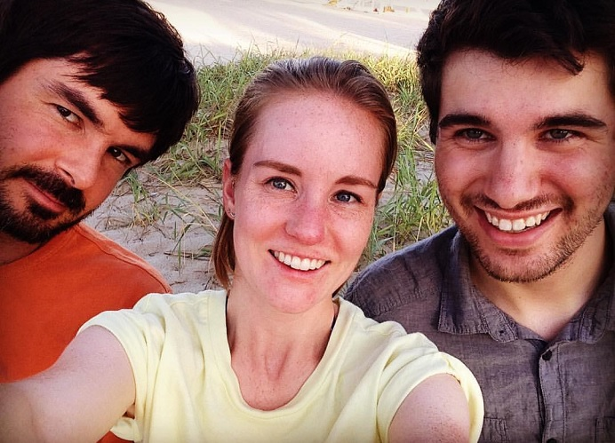
sex ratio ecology of spider mites; Red Queen dynamics; parasite-mediated selection
systematic reviews; immune systems
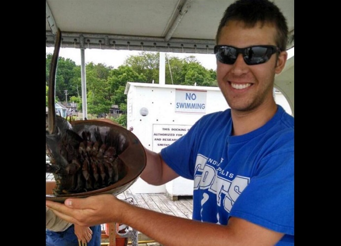
trait-mediated interactions; indirect effects in predator-prey dynamics
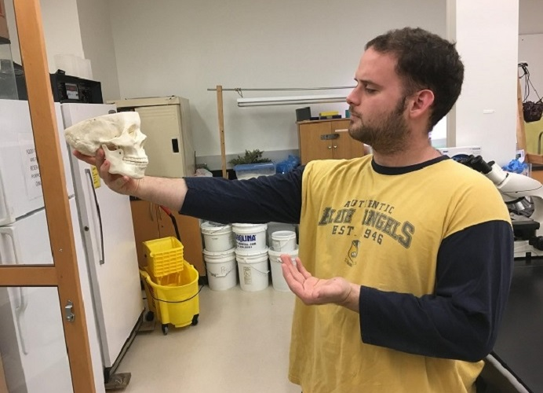
genomes; host specialization
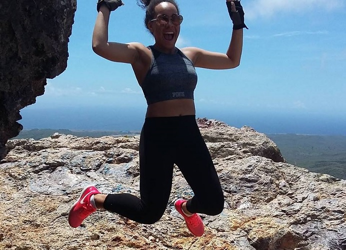
Diversity of plant-derived compounds as mosquito repellents
Parasitism of spotted mangrove crabs (Aratus pisonii) in Tampa Bay
Lajeunesse, M.J. (2026) Converting and constructing effect sizes with the response ratio. Ecology Letters 29, e70335. PDF [figshare] [DOI]
Summary. Effect sizes published as response ratios cannot be converted to other effect size metrics and this has limited the scope of what can be achieved with the broad secondary analysis of ecological study outcomes. Here a conversion to Hedges' d is introduced, as well as a new framework for repurposing effect sizes using abstract algebra to geometrically construct effect sizes. These conversions allow for previously isolated ecological data to be combined and unified with meta-analysis but also repurposed into different relative-change datatypes without having to extract new data.
Stiling, P, and Lajeunesse, M.J. (2026) Biocontrol enemies have stronger effects than non-biocontrol enemies on insect prey. BioControl 71, 255−266. PDF [DOI]
Stiling, P, and Lajeunesse, M.J. (2025) Biocontrol insects have stronger effects than non-biocontrol insects on plants. BioControl 70, 555−569. PDF [DOI]
Muir, E.J., Lajeunesse, M.J., and Kramer, A.M. (2024) The magnitude of Allee effects varies across Allee mechanisms, but not taxonomic groups. Oikos 2024, e10386. PDF [DOI]
Hernández-Bojorge, S., Campos, A.. Parikh, J., Beckstead, J., Lajeunesse, M.J., and Wildman, D. (2024) The prevalence and risk factors of PTSD symptoms among nurses during the COVID-19 pandemic--A systematic review and meta-analysis. International Journal of Mental Health Nursing 33, 523−545. PDF [DOI]
Ivimey-Cook, E.R., Noble, D.W.A., Nakagawa, S., Lajeunesse, M.J., and Pick, J.L. (2023) Advice for improving the reproducibility of data extraction in meta-analysis. Research Synthesis Methods 14, 911−915. PDF [DOI]
Lajeunesse, M.J. (2021) Squeezing data from scientific images using the juicr package for R. R package version 0.1, CRAN
Lajeunesse, M.J. (2021) switchboard: An agile widget engine for real-time, dynamic dashboards in R. R package version 0.1, CRAN
Krause, M.A., Koster, T., MacNeill, B.N., Zydek, D.J., Ogburn, N.T., Sharpin, J., Shell, R., and Lajeunesse, M.J. (2020) Diversity and abundance of dragonflies and damselflies in Tampa Bay, Florida. Florida Entomologist 103, 392−396. PDF [DOI]
Stockwell, J.D., Doubek, J.P., Adrian, R., Anneville, O., Carey, C.C., Carvalho, L., De Senerpont Domis, L.N., Dur, G., Frassl, M.A., Grossart, H.-P., Ibelings, B.W., Lajeunesse, M.J. , Lewandowska, A.M., Llames, M.E., Matsuzaki, S.-I.S., Nodine, E.R., N ges, P., Patil, V.P., Pomati, F., Rinke, K., Rudstam, L.G., Rusak, J.A., Salmaso, N., Seltmann, C.T., Straile, D., Thackeray, S.J., Thiery, W., Urrutia-Cordero, P., Venail, P., Verburg, P., Woolway, R.L., Zohary, T., Andersen, M.R., Bhattacharya, R., Hejzlar, J., Janatian, N., Kpodonu, A.T.N.K., Williamson, T.J., and Wilson, H.L. (2020) Storm impacts on phytoplankton community dynamics in lakes. Global Change Biology 26, 2753−2784. [ PDF = article + supp. info. ] [DOI]
This workgroup aims to gather and standardize existing datasets, perform meta-analyses to evaluate the sensitivity of aquatic ecosystems to extreme weather events, and provide new frameworks to explore theoretical questions related to phytoplankton diversity and succession.
Global Evaluation of the Impacts of Storms on freshwater Habitat and structure of phytoplankton Assemblages (GEISHA)
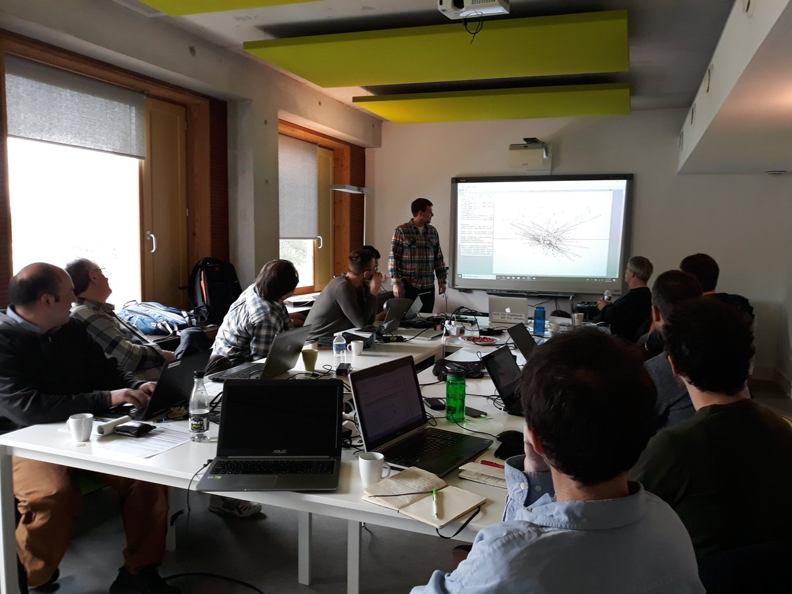
GEISHA tools
algaeClassify R package
V. Patil, T. Seltmann, N. Salmaso, O. Anneville, M.J. Lajeunesse and D. Straile
This R package categorizes phytoplankton functional groups based on functional traits.
Sauer, E.L., Cohen, J.M., Lajeunesse, M.J., McMahon, T.A., Civitello, D.J., Knutie, S.A., Nguyen, K., Roznik, E.A., Sears, B.F., Bessler, S., Delius, B., Halstead, N., Ortega, N., Venesky, M.D., Young, S., and Rohr, J.R. (2020) A meta-analysis reveals temperature, dose, life stage, and taxonomy influence host susceptibility to a fungal parasite. Ecology 101, e02979. PDF [DOI]
Brown, T.-R. W., Lajeunesse, M.J., and Scott, K.M. (2020) Strong effects of elevated CO2 on freshwater microalgae and ecosystem chemistry. Limnology and Oceanography 65, 304−313. PDF [DOI]
Lajeunesse, M.J., Avello, D.A., Behrmann, M.S., Buschbacher, T.J., Carey, K., Carroll, J., Chafin, T.J., Elkott, F., Faust, A.M., Fauver, H., Figueroa, G.D., Flaig, L.L., Gauta, S.A., Gonzalez, C., Graham, R.M., Hamdan, K., Hanlon, T., Hashami, S.N., Huynh, D., Knaffl, J.L., Lanzas, M., Libell, N.M., McCabe, C., Metzger, J., Mitchell, I., Morales, M.A., Nayyar, Y.R., Perkins, A., Phan, T.-A., Pidgeon, N.T., Ritter, C.L., Rosales, V.C., Santiago, O., Stephens, R., Taylor, E.J., Thomas, A.J., and Yanez, N.E. (2020) Infected mosquitoes have altered behavior to repellents: a systematic review and meta-analysis. Journal of Medical Entomology 57, 542−550. PDF [DOI] [ Profiled by ESA's Entomology Today, see: ]
Class project from our Fall 2018 Medical & Applied Entomology course. All 36 undergraduate students are co-authors. Below are some of these undergraduates capturing specimens for their preserved insect collections (Oct. 2018; photo's by co-author T.-A. Phan).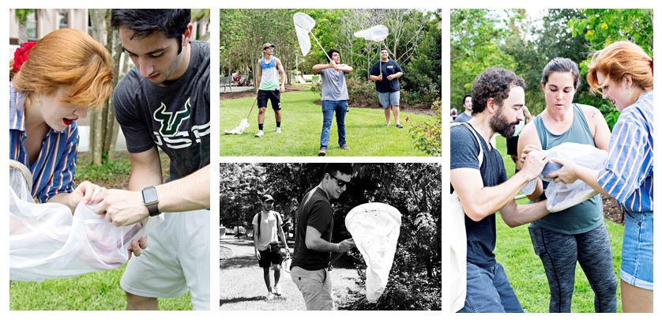
MacNeill, B.N., and Lajeunesse, M.J. (2019) Effects of river hydrology and physicochemistry on anchovy abundance and cymothoid isopod parasitism. Journal of Parasitology 105, 760−768. PDF [DOI]
Hoeksema, J.D., Bever, J.D., Chakraborty, S., Chaudhary, V.B., Gardes, M., Gehring, C.A., Hart, M.M., Housworth, E.A., Kaonongbua, W., Klironomos, J.N., Lajeunesse, M.J., Meadow, J., Milligan, B.G., Piculell, B., Pringle, A., Rúa, M.A., Umbanhowar, J., Viechtbauer, W., Wang, Y.-W., Wilson, G.W.T., and Zee, P.C. (2018) Evolutionary history of plant hosts and fungal symbionts predicts the strength of mycorrhizal mutualism. Communications Biology 1, 116. [ PDF = article + supp. info. ] [DOI]
Cohen, J.M., Lajeunesse, M.J., and Rohr, J.R. (2018) A global synthesis of animal phenological responses to climate change. Nature Climate Change 8, 224−228. [ PDF = article + supp. info. ] [DOI]
Brace, A.J., Lajeunesse, M.J., Ardia, D.R., Hawley, D.M., Adelman, J.S., Buchanan, K.L., Fair, J.M., Grindstaff, J.L., Matson, K.D., and Martin, L.B. (2017) Life history and body mass drive costs of immune response. Journal of Experimental Zoology Part A 327, 254−261. [ PDF = article + supp. info. ] [DOI]
Habegger, M.L., Huber, D.H., Lajeunesse, M.J., and Motta, P.J. (2017) Theoretical calculations of bite force in billfishes. Journal of Zoology 303, 15−26. PDF [DOI]
Bergman, J.N., Lajeunesse, M.J., and Motta, P.J. (2017) Teeth penetration force of the tiger shark Galeocerdo cuvier and sandbar shark Carcharhinus plumbeus. Journal of Fish Biology 91, 460−472. PDF [DOI]
Wallace, B., Lajeunesse, M.J., Dietz, G., Dahabreh, I.J., Schmid, C.H., Trikalinos, T.A., and Gurevitch, J. (2017) OpenMEE: Intuitive, open-source software for meta-analysis in ecology and evolutionary biology. Methods in Ecology and Evolution 8, 941−947. [ PDF = article + appendices ] [DOI]
Summary. OpenMEE: Open Meta-analyst for Ecological and Evolutionary Biology aims to address the need for advanced, easy-to-use software for meta-analysis and meta-regression. OpenMEE has a cross-platform easy-to-use graphical user interface (GUI) that provides researchers entrance to the broad and diverse advanced statistical functionalities offered in R, without requiring knowledge of R programming. OpenMEE offers a suite of advanced meta-analysis and meta-regression methods for synthesizing continuous and categorical data, including meta-regression with multiple covariates, phylogenetic analyses, simple missing data imputation, and other options. OpenMEE also supports data importing and exporting, graphing of data and estimation results, and summary table generation.
Rúa, M.A., Antoninka, A., Antunes, P.M., Chaudhary, V.B., Gehring, C., Lamit, L.J., Piculell, B.J., Bever, J.D., Zabinski, C., Meadow, J.F., Lajeunesse, M.J., Milligan, B.G., Karst, J., and Hoeksema, J.D. (2016) Home-field advantage? Evidence of local adaptation among plants, soil, and arbuscular mycorrhizal fungi through meta-analysis. BMC Evolutionary Biology 16, 122. PDF [DOI]
Lajeunesse, M.J. (2016) Facilitating systematic reviews, data extraction and meta-analysis with the metagear package for R. Methods in Ecology and Evolution 7, 323−330. [ PDF = article + supp. info. & PDF = updated manual ] [DOI]
Summary. Functionalities for facilitating systematic reviews, data extractions, and meta-analyses. It includes a GUI (graphical user interface) to help screen the abstracts and titles of bibliographic data; tools to assign screening effort across multiple collaborators/reviewers and to assess inter-reviewer reliability; tools to help automate the download and retrieval of journal PDF articles from online databases; automated data extractions from scatter-plots; PRISMA (Preferred Reporting Items for Systematic Reviews and Meta-Analyses) flow diagrams; simple imputation tools to fill gaps in incomplete or missing study parameters; generation of random effects sizes for Hedges' d, log response ratio, odds ratio, and correlation coefficients for Monte Carlo experiments; covariance equations for modelling dependencies among multiple effect sizes (e.g., effect sizes with a common control); and finally summaries that replicate analyses from widely used but no longer updated meta-analysis software.
Liu, L., Wang, X., Lajeunesse, M.J., Miao, G., Piao, S., Wan, S., Wu, Y., Wang, Z., Yang, S., Li, P., and Deng, M. (2016) A cross-biome synthesis of soil respiration and its determinants under simulated precipitation changes. Global Change Biology 22, 1394−1405. [ article = PDF & supp. info. = ![[ZIP]](zip.png) ] [DOI]
] [DOI]
Janicke, T., Haederer, I.K, Lajeunesse, M.J., and Anthes, N. (2016) Darwinian sex roles confirmed across the animal kingdom. Science Advances 2, e1500983. [ PDF = article + appendices ] [DOI]
Janicke, T., Haederer, I.K, Lajeunesse, M.J., and Anthes, N. (2016) A plea for understanding diversity in sexual selection. Science Advances 2, e1500983, eLetter supplement. [letter & response]
Lajeunesse, M.J. (2015) Bias and correction for the log response ratio in ecological meta-analysis. Ecology 96, 2056−2063. [ PDF = article + appendices ] [DOI]
Ferguson, A.R, Huber, D.R., Lajeunesse, M.J., and Motta, P.J. (2015) Feeding performance of king Mackerel, Scomberomorus cavalla. Journal of Experimental Zoology 323A, 399−413. PDF [DOI]
Lajeunesse, M.J., and Fox, G.A. (2014) Statistical approaches to the problem of phylogenetically correlated data. In G.A. Fox, S. Negrete-Yankelevitch, and V.J. Sosa, editors. Ecological Statistics: Contemporary Theory and Application (pp. 261−283). Oxford University Press, Oxford, UK. [ PDF = chapter + R script ] [DOI]
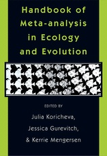
Lajeunesse, M.J. (2013) Power statistics for meta-analysis: tests for mean effects and homogeneity. In J. Koricheva, J. Gurevitch, and K. Mengersen, editors. Handbook of meta-analysis in ecology and evolution (pp. 348−363). Princeton University Press, Princeton, New Jersey, USA. PDF [JSTOR]
Lajeunesse, M.J. (2013) Recovering missing or partial data from studies: a survey of conversions and imputations for meta-analysis. In J. Koricheva, J. Gurevitch, and K. Mengersen, editors. Handbook of meta-analysis in ecology and evolution (pp. 195−206). Princeton University Press, Princeton, New Jersey, USA. PDF [JSTOR]
Lajeunesse, M.J., Rosenberg, M.R. and Jennions, M.D. (2013) Phylogenetic nonindependence and meta-analysis. In J. Koricheva, J. Gurevitch, and K. Mengersen, editors. Handbook of meta-analysis in ecology and evolution (pp. 284−299). Princeton University Press, Princeton, New Jersey, USA. PDF [JSTOR]
Curtis, P.S., Mengersen, K., Lajeunesse, M.J., Rothstein, H.R. and Stewart, G.B. (2013) Extraction and critical appraisal of data. In J. Koricheva, J. Gurevitch, and K. Mengersen, editors. Handbook of meta-analysis in ecology and evolution (pp. 52−60). Princeton University Press, Princeton, New Jersey, USA. PDF [JSTOR]
Lortie, C.J., Lau, J., and Lajeunesse, M.J. (2013) Graphical presentation of results. In J. Koricheva, J. Gurevitch, and K. Mengersen, editors. Handbook of meta-analysis in ecology and evolution (pp. 339−347). Princeton University Press, Princeton, New Jersey, USA. PDF [JSTOR]
Schmid, C.H., Stewart, G.B., Rothstein, H.R., Lajeunesse, M.J., and Gurevitch, J. (2013) Software for statistical meta-analysis. In J. Koricheva, J. Gurevitch, and K. Mengersen, editors. Handbook of meta-analysis in ecology and evolution (pp. 174−194). Princeton University Press, Princeton, New Jersey, USA. PDF [JSTOR]
Robinson, S.A., Lajeunesse, M.J., and Forbes, M.R. (2012) Sex differences in mercury contamination of birds: testing multiple hypotheses with meta-analysis. Environmental Science & Technology 46, 7094−7101. [ PDF = article + supp. info. ] [DOI]
Chamberlain, S.A., Hovick, S.M., Dibble, C.J., Rasmussen, N.L., Van Allen, B.G., Maitner, B.S., Ahern, J.R., Bell-Dereske, L.P., Roy, C.L., Meza-Lopez, M, Carrillo, J., Siemann E., Lajeunesse, M.J., and Whitney, K.D. (2012) Does phylogeny matter? Assessing the impact of phylogenetic information in ecological meta-analysis. Ecology Letters 15, 627−636. [ article = PDF & supp. info. = ] [DOI]
Parachnowitsch, A.L., and Lajeunesse, M.J. (2012) Adapting with the enemy: local adaptation in plant−herbivore interactions. New Phytologist 193, 294−296. PDF [DOI]
Parker, J.D., Burkepile, D.E., Lajeunesse, M.J., and Lind, E.M. (2012) Phylogenetic isolation increases plant success despite increasing susceptibility to generalist herbivores. Diversity and Distributions 18, 1−9. [ PDF = article + appendix] [DOI]
Lajeunesse, M.J. (2011) On the meta-analysis of response ratios for studies with correlated and multi-group designs. Ecology 92, 2049−2055. [ PDF = article + appendix ] [DOI]
Lajeunesse, M.J. (2011) phyloMeta: a program for phylogenetic comparative analyses with meta-analysis. Bioinformatics 27, 2603−2604. PDF [DOI]
Summary. phyloMeta is an easy to use console program for integrating phylogenetic information into meta-analysis. It is designed to help ecologists, evolutionary biologists and conservation biologists analyze effect size data extracted from published studies in a comparative phylogenetic context. This software estimates phylogenetic versions of all the traditional meta-analytical statistics used for: pooling effect sizes with weighted regressions; evaluating the homogeneity of these effect sizes; performing moderator tests akin to ANOVA style analyses; and analyzing data with fixed- and random-effects models. phyloMeta is developed in C/C++ and can be used via command line in MS Windows environments.
Carmona, D., Lajeunesse, M.J., and Johnson, M.T.J. (2011) Plant traits that predict resistance to herbivores. Functional Ecology 25, 358−367. [ article = PDF & supp. info. = ] [DOI]
Lajeunesse, M.J. (2010) Achieving synthesis with meta-analysis by combining and comparing all available studies. Ecology 91, 2561−2564. PDF [DOI]
Garamszegi, L.Z., Calhim, S., Dochtermann, N., Hegyi, G., Hurd, P.L., Jørgensen, C., Kutsukake, N., Lajeunesse, M.J., Pollard, K.A., Schielzeth, H., Symonds, M.R.E., and Nakagawa, S. (2009) Changing philosophies and tools for statistical inferences in behavioral ecology. Behavioral Ecology 20, 1363−1375. PDF [DOI]
Lajeunesse, M.J. (2009) Meta-analysis and the comparative phylogenetic method. American Naturalist 174, 369−381. [ PDF = article + appendix ] [ PHYLOMETA
 | software for meta-analysis ] [DOI]
| software for meta-analysis ] [DOI]
Agrawal, A.A., Lajeunesse, M.J., and Fishbein, M. (2008) Evolution of latex and its constituent defensive chemistry in milkweeds (Asclepias): a phylogenetic test of plant defense escalation. Entomologia Experimentalis et Applicata 128, 126−138. PDF [DOI]
Lajeunesse, M.J. (2007) Ectoparasitism of damselflies by water mites in Central Florida. Florida Entomologist 90, 643−649. PDF [DOI]
Beirinckx, K., Van Gossum, H., Lajeunesse, M.J., and Forbes, M.R. (2006) Sex biases in dispersal and philopatry: insights from a meta-analysis based on capture-mark-recapture studies of damselflies. Oikos 113, 539−547. PDF [DOI]
Johnson, M.T.J., Lajeunesse, M.J., and Agrawal, A.A. (2006) Additive and interactive effects of plant genotypic diversity on arthropod communities and plant fitness. Ecology Letters 9, 24−34. [ PDF = article + appendix ] [DOI]
Lajeunesse, M.J., Forbes, M.R., and Smith, B.P. (2004) Species and sex biases in ectoparasitism of dragonflies by mites. Oikos 106, 501−508. PDF [DOI]
Lajeunesse, M.J., and Forbes, M.R. (2003) A comparison of structural size and condition in two female morphs of the damselfly Nehalennia irene (Hagen) (Zygoptera : Coenagrionidae). Odonatologica 32, 281−287. PDF
Lajeunesse, M.J., and Forbes, M.R. (2003) Variable reporting and quantitative reviews: a comparison of three meta-analytical techniques. Ecology Letters 6, 448−454. PDF [DOI]
Lajeunesse, M.J., and Forbes, M.R. (2002) Host range and local parasite adaptation. Proceedings of the Royal Society of London, Series B. 269, 703−710. PDF [DOI]
Lajeunesse, M.J. (2021) Screening studies with Microsoft Excel for systematic reviews and meta-analysis. LajeunesseLab, Hard-boiled synthesis [VIDEO]. Youtube [DOI]
Lajeunesse, M.J. (2021) Creating publication-quality forest plots in Microsoft Excel. LajeunesseLab, Hard-boiled synthesis [VIDEO]. Youtube [DOI]
Lajeunesse, M.J. (2021) Fixed effect, homogeneity tests, and random-effects meta-analysis in Microsoft Excel. LajeunesseLab, Hard-boiled synthesis [VIDEO]. Youtube [DOI]
Lajeunesse, M.J. (2017) Understanding Statistical Error: A Primer for Biologists by Marek Gierliński. The Quarterly Review of Biology 92, 304−305. PDF
Patel, B.B., Andrade, C.M., Lajeunesse, M.J., and Geerken, R. (2014) Unusual finding of an intact moth during routine colonoscopy. ACG Case Reports Journal 1(3), 119. PDF [DOI]
All our software is free and open-source.
An end-to-end R package with tools that span the entire research synthesis work-flow; from screening studies, extracting data from figures, to meta-analysis.
Lajeunesse, M.J. (2016) Facilitating systematic reviews, data extraction and meta-analysis with the metagear package for R. Methods in Ecology and Evolution 7, 323−330. [ PDF = article + supp. info. & PDF = updated manual ] [DOI]
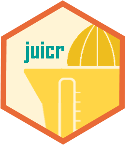
An image-to-data R package with automated, semi-automated, and manual tools for extracting numerical data from scientific images like scatter- or bar-plots.
Lajeunesse, M.J. (2021) Squeezing data from scientific images using the juicr package for R. TBA [ Top 40 new R packages ]
An agile widget engine for creating dynamic, real-time dashboards in R. Widgets include progress bars, injectors, eavesdroppers, and other visualizations.
Lajeunesse, M.J. (2021) Creating real-time, dynamic vizualizations with the switchboard package for R. TBA
Free and cross-platform software for meta-analysis. It is a python-based GUI that runs R on the backend to facilitate multi-factor, phylogenetic meta-analysis.
Wallace, B., Lajeunesse, M.J., Dietz, G., Dahabreh, I.J., Schmid, C.H., Trikalinos, T.A., and Gurevitch, J. (2017) OpenMEE: Intuitive, open-source software for meta-analysis in ecology and evolutionary biology. Methods in Ecology and Evolution 8, 941−947. [ PDF = article + appendices ] [DOI]
thanks all who watched my silly YouTube and reached-out about this abandoned R project...
— Marc J. Lajeunesse (@LajeunesseLab) April 30, 2021
introducing the first ??-themed plot-digitizer with automated extraction tools:
the juicr R package: squeeze data from your images
now on CRAN, but watch here: https://t.co/W8aszh2Tdg pic.twitter.com/WQUnXWRtuT
Dashboards are great for data snapshots--but what if you need something more agile in R?
— Marc J. Lajeunesse (@LajeunesseLab) October 8, 2021
Generate real-time, dynamic visualizations for simulations or whatevs with the ?????????????????????? package ??
See tutorial:https://t.co/DAGqDCNOdI
??1/7 #Rstats #dataviz #DataScience pic.twitter.com/77N3i0BE5i
A Windows console program for phylogenetic meta-analysis. Conventional statistics are reported with phylogenetically-independent versions.
Lajeunesse, M.J. (2011) phyloMeta: a program for phylogenetic comparative analyses with meta-analysis. Bioinformatics 27, 2603−2604. PDF
Reiley Phillips and Roman Preistley present their MS research at the 108st Annual Meeting of the Florida Entomological Society ( St. Augustine, Florida).
Congrats to labbie Roman Priestley for defending his M.S. thesis!
Labbie Reilley Mccollum joins Jessica Ware in Africa via an REU to sample odonates!
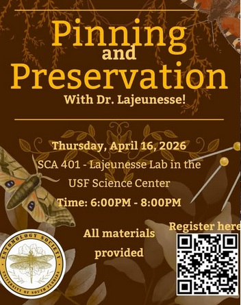
Marc hosts the USF Entomology Society for insect pinning!
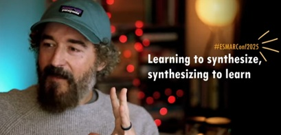
Marc gives a keynote talk about teaching meta-analysis and AI at the ESMARConf2025 [watch here].
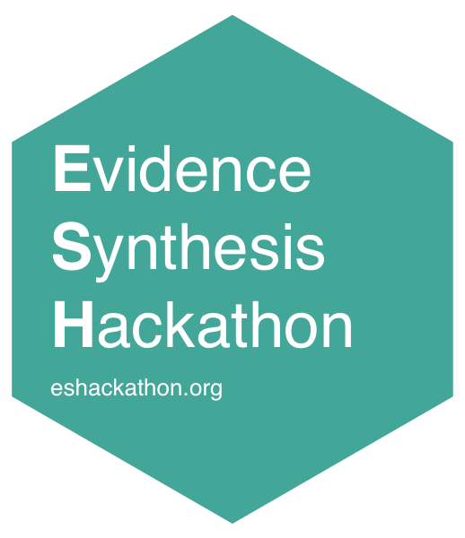
Marc presents about issues with the automation of data extractions from scientific plots.
Huge congratulations to the winner of the #ESMARConf2021 popular vote (and with the most YouTube views!) - @LajeunesseLab (Marc Lajeunesse)!!!
For anyone who hasn't yet seen his amazing presentation (the livestream is even better!), check it out: https://t.co/Y8zGOpKdUW pic.twitter.com/t0qTCJdNFV
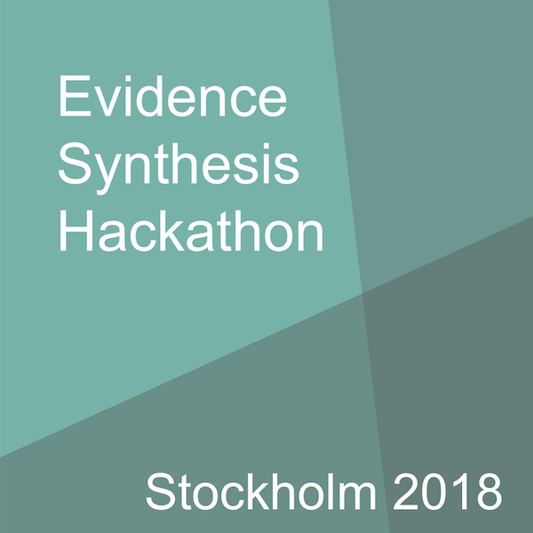
Marc gets invited to a hackaton in Stockholm (Sweden).
The Evidence Synthesis Hackathon (EHS) Series was founded in 2017 by Martin Westgate and Neal Haddaway to drive progress in technology for evidence synthesis.

Thank you for the opportunity to contribute and it was a great success!